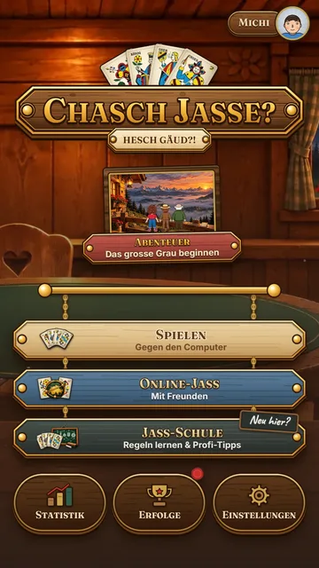
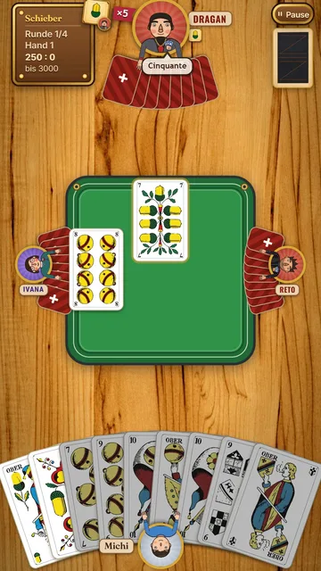
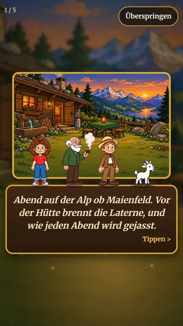
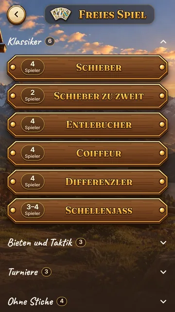

Gratis, ohne Werbung und ohne Konto. Schieber, Coiffeur, Differenzler und vieles mehr. Online mit Freunden oder gegen den Computer (ohne Internetverbindung spielbar).




Android
Drei Tipper, dann bist du dabei.
- Der Testgruppe beitreten Auf der Google-Seite «Gruppe beitreten» tippen – manchmal fragt Google ein zweites Mal, dann nochmals bestätigen. Du bekommst keine Mails. Gruppe beitreten
- Als Tester anmelden Auf der Seite von Google Play «Tester werden» tippen. Tester werden
- App installieren Im Play Store «Installieren» tippen. Erscheint die App noch nicht, ein paar Minuten warten und nochmals versuchen – über die Suche findest du sie noch nicht. App installieren
iPhone und iPad
Die App ist fertig und im App Store – ein Tipper genügt.

Und dann?
- Spiel ab und zu eine Partie – auch eine kurze hilft.
- Bleib dabei und lösche die App während der 14 Tage nicht. Updates kommen automatisch über den Play Store.
- Fehler oder Ideen? Schreib mir an kontakt@chaschjasse.ch oder nutze «Feedback an Entwickler senden» im Play Store.
Klappt etwas nicht?
Android: «Tester werden» zeigt einen Fehler oder die App ist nicht verfügbar.
Meist bist du in Schritt 1 und 2 mit verschiedenen Google-Konten angemeldet. Prüfe oben rechts im Browser bzw. im Play Store, welches Konto aktiv ist, und wiederhole die Schritte mit demselben Konto.
Warum so umständlich?
Damit die App bei Google Play erscheinen darf, müssen mindestens 12 Personen 14 Tage lang als Tester angemeldet bleiben. Die Schritte schreibt Google vor.
Welche Daten sehe ich als Entwickler?
Die E-Mail-Adresse deines Google-Kontos (als Mitglied der Testgruppe) sowie Rückmeldungen, die du selbst sendest. Mehr dazu in der Datenschutzerklärung.
Weitersagen
Kennst du jemanden mit einem Android-Handy, der gern jasst? Schick ihm den Link direkt per WhatsApp – die Nachricht ist schon geschrieben:
Oder lass diesen Code scannen – er passt für Android und iPhone:
chaschjasse.ch/test.html